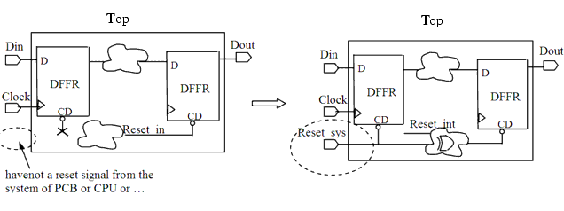

| Description | This rule fires when Leda does not detect a system reset in the design. Defining a system reset improves the performance of reset tree generation and timing analysis. |
| Policy | DESIGN |
| Ruleset | RESETS |
| Language | VHDL/Verilog |
| Type | Hardware |
| Severity | Error |
Here are examples of invalid and valid Verilog code, followed by circuit diagram that illustrate the problem and the solution:
// Invalid example module ntl_rst02_top(Clock, Din, Dout); input Clock, Din; output Dout; wire Reset_int; //a reset generated by the interna logic ... //DFFR - flip-flop with reset, CD is the reset pin DFFR U0(.D(net_01), .CP(Clock), .CD() .Q(net_02)); //without reset DFFR U1(.D(net_03), .CP(Clock), .CD(Reset_int) .Q(net_04)); // NTLRST02 fires -- no system reset ... endmodule // Valid example module ntl_rst02_top(Clock, Reset_sys, Din, Dout); input Clock, Reset_sys, Din; //with a defined system reset at top-level output Dout; ... //DFFR - flip-flop with reset, CD is the reset pin DFFR U2(.D(net_05), .CP(Clock), .CD(Reset_sys) .Q(net_06)); // OK -- Has a system reset ... endmodule